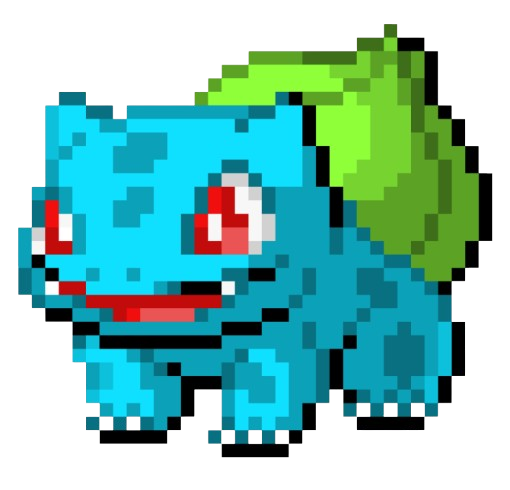
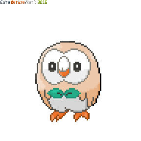
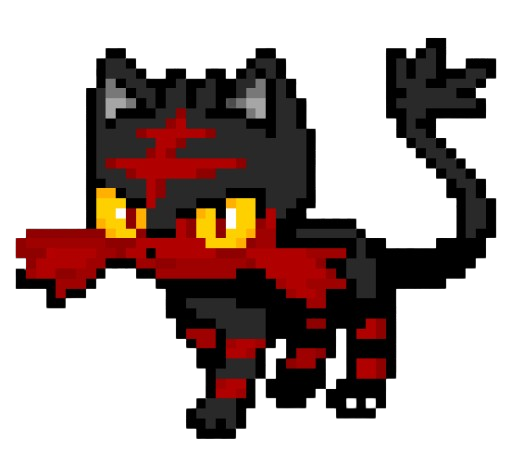
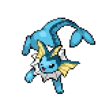
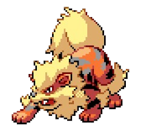
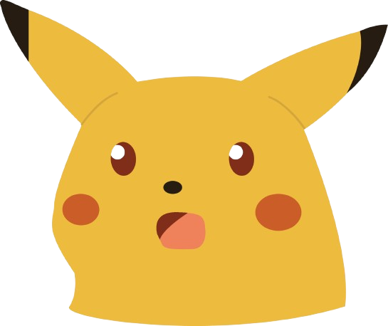

Escolha uma Regiao
qual das opçoes para o primeiro ginasio?
Qual dos iniciais voce escolheria?

Bulbasaur é super efetivo contra o primeiro Ginasio.
Charmande é fraco cotra o primeiro ginasio.

rowlet tem uma otima tipagem no seu ultimo estagio.

Litten tem uma das melhores tipagens e status, continuando no meta do mundial pokemon des do seu lançamento.
Agora, qual seria uma boa opçao para ajudar nas fraquezas do seu inicial?
Voce pode usar ele tanto para ataque quanto defese

Vaporeon é um otimo tanque do tipo agua.

Arcanine é um dos melhores pokemon de tipo fogo de kanto.

Parabens vc concluiu :D
Outros pokemons de tipo fogo podem ser boa escolha tambem.